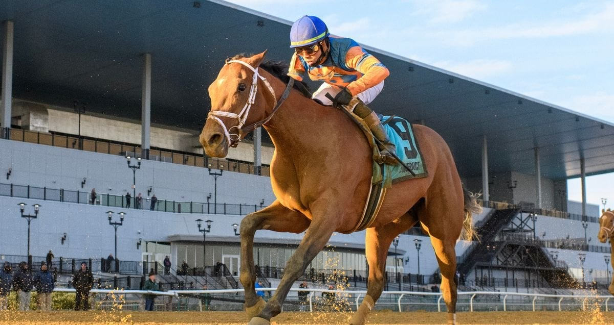

Renegade trabaja en Saratoga con la mirada puesta en el Belmont Stakes del 6 de junio
Renegade, segundo del Kentucky Derby tras Golden Tempo, ha completado su trabajo más relevante de la semana sobre la pista de entrenamiento Oklahoma del Saratoga Race Course, donde se disputará el Belmont Stakes el próximo 6 de junio. El ejemplar de Repole Stable, Robert y Lawana Low ejercitó en compañía con su…

Foto: assetsv2.nyra.com
Renegade, segundo del Kentucky Derby tras Golden Tempo, ha completado su trabajo más relevante de la semana sobre la pista de entrenamiento Oklahoma del Saratoga Race Course, donde se disputará el Belmont Stakes el próximo 6 de junio. El ejemplar de Repole Stable, Robert y Lawana Low ejercitó en compañía con su compañero de cuadra Powershift bajo la supervisión del entrenador Todd Pletcher.
"Me pareció un trabajo muy bueno para Renegade. Es un caballo que se ejercita con regularidad y se recuperó muy rápido; no parecía cansado en absoluto, así que estoy contento", valoró Pletcher tras el galope. El miembro del Hall of Fame del turf estadounidense matizó que la inscripción todavía no está cerrada: "Tengo que hablarlo con Mike Repole, pero estamos considerando el Belmont. Siempre hemos pensado muy bien de él y creo que él y Powershift se complementan en estilos de carrera. Está sobre la mesa".
Renegade había ganado de manera contundente el Arkansas Derby (Grado 1) el 28 de marzo en Oaklawn Park, pero en el Derby de Kentucky fue golpeado en la salida desde el cajón uno, rodó decimosexto en la curva final y cerró segundo. La progresión sostenida y la facilidad del trabajo en Saratoga le devuelven al primer plano del cartel para una edición del Belmont que, este año, vuelve a disputarse sobre 10 furlongs (1.609 metros más un quinto) por estar la carrera trasladada a Saratoga mientras se completan las obras de Belmont Park.
La Grado 1 Belmont Stakes presented by NYRA Bets, dotada con dos millones de dólares, completará la Triple Corona el sábado 6 de junio. La inscripción definitiva y el cajón de salida se conocerán tras el draw oficial del lunes 1 de junio en Saratoga. Renegade y Powershift forman parte de un grupo de candidatos que también incluye al ganador del Derby, Golden Tempo, en una cita que afronta su segunda edición consecutiva fuera de su sede tradicional.
— Redacción de Galope al Día